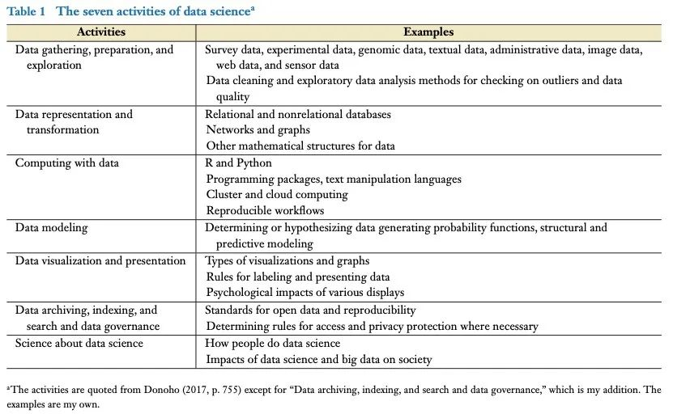

收录于合集 #《国际关系前沿》2022年第1期 23个

作品简介
作者 ： Henry E. Brady，加州大学伯克利分校高盛公共政策学院院长，政治学教授。
编译 ： 钱靓（国政学人编译员，上海外国语大学）
来源 ： Brady, H. E. (2019). The Challenge of Big Data and Data Science. Annual Review of Political Science , 22(1), 297–323. https://doi.org/10.1146/annurev-polisci-090216-023229
归档 ： 《国际关系前沿》2022年第1期，总第40期。
内容摘要 ****
大数据和数据科学在各方面都对世界产生造成变革，引发中国社会科学家新的关注。这些方面包括互联网对公民和媒体的冲击、智慧城市的影响、网络战和网络恐怖主义的可能性、精准医学的潜在影响以及人工智能和自动化的后果。伴随着这些社会变化，学界开始使用新的数据科学方法研究行政数据、网络数据、文本数据和传感器- 音频- 视频数据。蓬勃发展的大数据和创新性的研究方法提供了从数据中提炼概念、进行描述性推断、得出因果推论和形成预测的新方式，而这有助于回答在此前难以解决的社会问题。不过这些大数据和研究方法也带来了挑战：在政策制定者采用例如动员选民或决定保释算法等方法进行研究时，他们必须掌握复杂算法中的概念及预测的具体含义，权衡预测与因果推理的相对价值，并且应对伦理挑战。
文章导读
近年来，“大数据（big data）”和“数据科学（data science）”频繁出现在媒体、学术期刊及政府报告中，相关技术也得到了政府、学界和社会的高度关注。大数据、数据科学以及与之相关的人工智能、网络基础设施和机器学习等概念为政治学带来了深刻的变化，引领了以下发展趋势。
第一，大数据和数据科学将引发社会及政治变革。由政府、军队、企业、非盈利组织和个人生成并为其所用的大容量、高速、多样与高精确性的数据、大幅提升的计算能力及经改善的数据科学方法一同从根本上改变了社会。大数据和数据科学创造了新的社会现象，并且提出了关于操控民众、隐私、信息真实性、工作的未来等基本问题以及其他许多对政治学家而言很重要的话题。
第二，科学家（包括政治科学家）可获取的数据量显著增加，为自然科学和社会科学提供了新的研究机遇。如今，政治科学家可以观察和分析人们选择消费的信息、政治行为者提供的信息、人们的生活环境及其生活许多其他方面的信息。
第三，政治科学家可以以新的方式开展工作。面对大量数据的冲击，政治科学家可以通过掌握便于访问、管理、清理、分析和存档数据的新技术重新思考自己应怎样进行政治科学研究。
第四，政治科学家需提出新问题，即重新思考构造概念、描述、因果推理和预测所要达成的目的。这一过程中，他们将重新解读政治行为，提出关于政治机构的新设计。
第五，政治科学家需处理与政治科学研究相关的伦理问题，他们需要思考包括信息的获取、使用和传播以及避免研究模型和结果的误用在内的复杂伦理问题。
01
大数据在容量、速度和类型方面的持续增长
大数据革命基于四大显著趋势。第一，数据数字化。随着记录社会事件的数据大量出现，数字通讯正在取代模拟通讯，数据可以被计算机存储和处理。第二，连接普遍化。如今已经可以记录特定事件，并与特定参与者相关联，这种点对点的电讯比广播更容易被追踪。数据数字化和连接普遍化意味着学者可以在现在鉴别并研究以往短暂发生的事件。第三，环境网络化。以前的通讯属于“一对一（如电话）”或“一对多（如广播）”的传播模式，但如今的通讯还包括结合了上述两种传播模式的社交网络；新的通讯模式可能以不同的方式影响政治、市场和文化，甚至可能因通讯构建的网络不接受异见而加剧政治极化。第四，数据由计算机编辑的趋势。计算机不仅仅是信息传递的媒介，也是创作信息、影响通讯内容的平台。传统的通讯总是试图以尽可能“真实”的方式传输信息，但是计算机可以通过程序将信息重新组合并进行新的输出。
02
大数据、数据科学的定义及其引发的社会和政治变化
有关大数据的定义，除了庞大的数据量，大数据革命的真正显著特征体现在记录、连接、网络化与创建信息的新技术上。人们通过电话、邮件、社交网站等技术进行信息交流，这些交流的时间、地点都被数字化地记录下来了，并且能够储存更长时间。互联网成为了社交网络和信息访问的绝佳站点，计算机生成信息并与人产生交互——如人工智能和虚拟现实，此时的大数据已经深入了人们生活的方方面面。因此，大数据的真正影响在于它改变了人们的认知环境，需要人们用新视角来看待数据数字化、连接普遍化、环境网络化和计算机生成信息的趋势；而这些趋势源于包括数据科学领域在内的技术新发展。
有关数据科学的定义，数据科学应该包含7种活动，它们分别为（参见下图）：数据收集、准备及挖掘；数据表示和转换；数据计算；数据建模；数据可视化呈现；数据归档、索引、搜索和数据治理；对数据科学学科本身的研究。因此，大学需要专门从事数据科学的学者和技术人员完成相关工作，以帮助学生和大学学者使用数据科学。

大数据和数据科学发展迅速，其概念和特征需要重新审视。随着科技创新和发展，信息革命的涉及面还在增多，但对它的研究还远远不足。
大数据及数据科学造成的影响是深远的，这些影响包括网络战的爆发、城市生活方式的改变、精准医疗的发展、大众传媒以及其对政治极化的催生作用。同时，人们也须注意到各国滥用人口普查和其他信息的可能性及相应后果，因为大数据使得社会、企业和政府有能力访问权限外的大量数据集，因此人们需关注数据的拥有者及有权收集和使用数据的决定者的权力。另外，人们需应对大数据运用过程中产生的一系列情况，包括黑客入侵信息系统或受到病毒攻击、算法在医疗诊断或城市运营时失效，此外还需要解决算法偏见、数据治理的正确方式、正当权利和福利等问题，并确保在没有同行评议的编辑能力、新闻规范、真实性保证下创作、传播新闻和信息。除此之外，人工智能（包括机器人）的伦理问题、就业问题和未来发展问题也需要关注。
03
大数据引起的政治科学研究新现象
A. 数据源的扩大
**
**
不断扩大的数据源有益于社会科学研究。新增的数据主要包括行政数据、网络数据、文本数据、传感器-音频-视频数据。
行政数据包括投票、游说、竞选捐款、贸易、税收、福利、警方报告、311美国非紧急求助电话等领域的大规模数据集，但这些数据集可能存在错误。此外，为了获得代表不同领域并有足够案例进行分析的数据集，研究需要更多人群间、跨组织或不同事件之间的广泛联系，而这意味着需要能够处理更多不同形式和变量数据的整合分析方式。曾有学者利用不同个人、组织、事件的数据间的广泛联系开展研究以扩大单一数据集的研究效用，但不同数据集创建时的名称、地点和其他信息的不匹配可能会使这种广泛联系失效。行政数据提供的数据一般是事实数据，而并非预测数据，如只能通过竞选捐款贡献数据得知哪些人曾为竞选捐献过，而无法得知谁将会捐款。解决方法之一是将这些数据与人口数据联系起来，如人口普查数据或机动车牌照数据，但这样的联系会存在法律和实际操作问题，而且这些人口数据也可能并非最佳标准数据。
网络数据可以从脸书、推特、谷歌搜索等网站获取。网络数据在社会经济特征方面通常具有高度选择性（因为年轻人接触网络数据更多），并且通常取决于人们是否使用相应的网络平台。这种数据由于微妙的选择效应可能会误导学者，并且还会产生数据量不足等问题。但不可否认的是，网络数据非常丰富，不仅可以利用它对事件展开实时研究，而且可以从中获取被主流信息掩盖的行为信息。
文本数据则提供了一个在政治分析中经常缺失的内容，即公民和政治家的话语。但使用文本数据需要谨慎，需要严谨的统计和估计方法，如“最大期望算法（Expectation–maximization algorithm，EM）”或“马尔可夫链蒙特卡洛算法（Markov chain Monte Carlo，MCMC）”。只有经过复杂算法分析的数据才可以最大程度上发挥量化研究的作用。
利用传感器-音频- 视频和其他数据进行研究，包括利用温度和降雨传感器数据研究天气对内战的影响，以及利用警察随身摄像头数据揭露警察视角下的种族不平等问题。传感器-音频- 视频和其他类型数据能够与政治事件相联系，但是对其研究需要进行大量的数据处理。此外，考虑到面部表情或肢体语言的复杂性、地理区域单位测量点和地理实体的不适配等问题，学者仍需思考如何将这些数据正确运用到研究中。
B. 研究习惯的改变
**
**
政治科学家必须开设新课程并熟练掌握数据科学家发展的新技术。新课程需要从两个方面入手：首先，新课程需要说明大数据带来的社会挑战及其对政治的影响，包括政治、政府、公共卫生和智慧城市中的相关问题，以及大数据导致的数据所有权和使用权、隐私问题和失业问题；其次，新课程需要给学生教授数据科学方法，课程内容包括R或Python语言编程、以理解统计数据为目的的重采样（Resampling）方法、上述四种数据源的概览、正确的预测方法和因果推断的方法以及适合量化研究的主题。
此外，政治科学家应关注用于数据清理（data cleaning）、数据管理（data management）、可重复科学（reproducible science）、数据生命周期管理（life-cycle management of data）和数据可视化（data visualization）的新软件，将它们视为新的研究管理方法。具体来说，就数据清理而言，有一个数据清理软件叫做DataWrangler（其免费版为Trifacta Wrangler），它可以为学者改进推理过程，提出建议，并跟踪数据分析过程；而另一个叫做Tidyverse，它是一个免费的 R程序集合，可用于创建整洁清晰的数据集。另外，可重复科学是指之前的学者通过文件和书面说明，使后来学者能够重现该项目包括关键的定量结论、表格和数字在内的最终结果报告，它符合期刊对可重复性的要求，能够为政府提供帮助。
04
政治科学研究中可能出现的新问题及伦理问题
数据科学主要源于计算机科学、统计学、图书馆或信息科学，始于生物学家在人脑神经元间连接的建模上以及认知科学家在人工智能开发上的努力。在此后的发展中，数据科学计算能力的提升带动了5种统计方法的创新，提高了统计模型的灵活性和预测能力。而后，由于深度学习（deep learning）（一种机器学习算法）开始有能力处理以前难以识别的语音和图像、自然语言和生物信息学等模式，数据科学在研究中的运用变得更加广泛。在此基础上，数据科学在一定程度上帮助解决了实证研究的四个基本问题：明确概念、提出推论、因果推断、进行预测，尤其是第一步和最后一步；但是，数据科学在解决这四个问题时仍然存在局限。
首先，人工智能通过无监督学习（unsupervised machine learning）方法为学者明确概念提供帮助。但是，例如“原子”、“物种”、“民主”的概念是不足以用模式识别（pattern detection）表达清楚的，因为概念背后的数据和理论间的关系是非常复杂的。
其次，数据科学可以帮助学者有效地呈现、描述数据，但问题在于如何有效地确定研究的特定人口范围：例如，学者通过数据科学可以得到完整的被逮捕罪犯名单或者已经登记的选民或食品券领取者，但是不能得知所有犯罪行为、潜在选民或应该获得食品券的人。网络数据的样本更是如此，因为学者很难界定其采样规范。
再次，数据科学反而可能导致因果推断错误。首先，一些狭隘的数据科学倡导者可能会错误地认为，只要可获取的数据量足够大，因果推断问题就会自动解决，然而推断的前提是选择正确样本而避免虚假相关。其次，他们可能在运用机器学习时忽视变量之间的实际相关性。除此之外，他们中还有人认为预测比因果推断更为重要。然而，政治学中非常重要的一点在于，因果关系往往是无法倒置的，比如警察数与犯罪数之间存在正相关关系，但这并不一定意味着更多的警察会导致更多的犯罪。因此，政治学研究需要更准确地识别因果关系的实质，防止做出错误的预测。
最后，学者还应思考如何使研究设计的因果机制与预测方法及正式建模相适配以提高预测的准确性。预测应该考虑反应行为、因果影响的异质性与结论范围扩大可能造成的影响。如今，数据科学可以通过交叉验证等方法使选择数据驱动模型（data- driven model）成为可能，同时考虑到模型和数据的不确定性。
此外，算法的不公正可能会导致伦理问题，尤其在司法和选举方面。有学者指出，算法的预测甚至可能被“操控”，从而强化现有的歧视和不公正。因此，必须保证数据科学在运用时的政治规范，并在设计算法时予以考虑。
译者评述
本篇综述通过回顾大数据、数据科学给政治科学研究带来的变化，指出了大数据、政治科学在研究方法上的优势和不足，为定量研究提供方法论上的指导。
关于大数据和数据科学，在平台之前的《国际关系中的地理信息系统（GIS）》文章中也有涉及，只是其针对的技术是特定的。但是，两篇文章都指出了定量研究在运用时应注意的样本选取问题。由此可见，量化研究中的样本描述准确性对研究结果的有效性有种决定性的作用。本文还提到了“可重复科学”的概念。这个概念与开放科学是息息相关的。译者认为，量化研究过程的可复制性将是检验研究结果的重要途径，尤其在社会科学领域。无论是重复原研究过程、在原研究基础上研究或是改变一定客观条件产生新研究，这都有助于保证研究结果的有效性和普适性。
在编译过程中，译者发现，文章的专业性非常强，在最后一部分中也提出了数据科学技术采用建议。在方法论上，政治科学与数据科学的交融在不断进行，社会科学的定量研究也更加规范。
词汇整理
可重复科学 reproducible science
深度学习 deep learning
数据可视化 data visualization
模式识别 pattern detection
审校 | 王星澳 阮辰阳
排版 | 牛子悦 黄伊蕾
文章观点不代表本平台观点，本平台评译分享的文章均出于专业学习之用, 不以任何盈利为目的，内容主要呈现对原文的介绍，原文内容请通过各高校购买的数据库自行下载。

国政学人
支持学术公益与知识传播
微信扫一扫赞赏作者 __赞赏
已喜欢，对作者说句悄悄话
取消 __
发送给作者
发送
最多40字，当前共字
上一页 1/3 下一页
长按二维码向我转账
支持学术公益与知识传播
受苹果公司新规定影响，微信 iOS 版的赞赏功能被关闭，可通过二维码转账支持公众号。